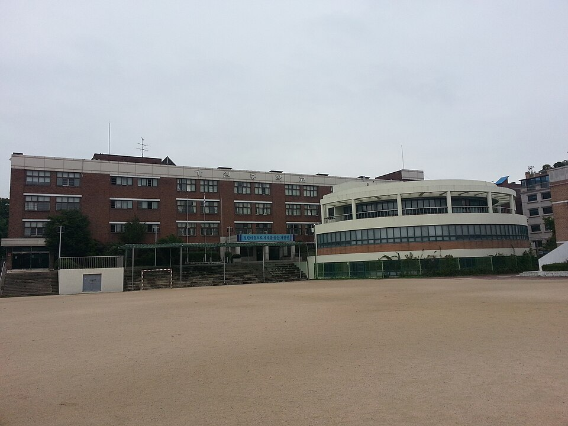

송파구는 서울에서 학교가 가장 많은 자치구 중 하나입니다. 잠실 쪽 잠실고·잠신고·잠실중은 대단지 아파트를 끼고 있어 내신 경쟁이 치열하고, 가락·문정 쪽 가락고·문정고와 오금동 오금중·오금고는 헬리오시티 입주 이후 학생 수가 크게 늘었습니다. 학교가 많고 학원가도 크다 보니, 오히려 우리 아이 학교 출제 경향에 맞는 선생님을 고르는 일이 어렵습니다.
오늘은 송파구에 직접 찾아가는 선생님 중 두 분을 소개합니다. 한 분은 과학탐구 전 과목을 15년째 가르치는 분, 한 분은 영어만 24년 가르친 분입니다.
① 최ㅇ수 선생님 — 과학탐구 전 과목, 자사고·특목고 대비 15년
최ㅇ수 선생님 남선생님
주요 자사고·특목고 대비 수업을 오래 해 온 과학탐구 전문 선생님입니다. 예고 입시 준비생과 약학 계열 시험 준비까지 지도한 폭넓은 경력이 있고, 화학·생명과학·지구과학·물리 네 과목을 모두 다뤄서 고2 탐구 선택을 앞두고 어느 과목이 맞는지부터 상담할 수 있습니다.
수업은 수준별로 다르게 짭니다. 하위권은 개념과 노트 정리 반복으로 자신감부터, 중위권은 출제 유형 적응력을 키우는 문제풀이 위주로. 유튜브·시각 자료를 활용해 어려운 개념을 쉽게 풀어내고, 학부모·학생과 3인 단톡방을 운영해 숙제 검사와 오답 관리를 공유합니다. 방문은 가락동 헬리오시티 인근만 가능하지만, 잠실·오금·문정 등 송파 다른 동네는 화상으로 같은 수업을 받을 수 있습니다.
최ㅇ수 선생님 상세 프로필 →② 유ㅇ홍 선생님 — 고등 영어 전문 24년, 오금·문정·장지 방문
유ㅇ홍 선생님 남선생님
미국에서 8년을 살고 석사를 마친 뒤, 수능 전문 학원과 국제형 대안학교에서 24년 넘게 영어만 가르쳐 온 선생님입니다. 기초 원리부터 심화까지 단계를 밟아 올라가는 수업이라, 중위권에서 정체된 학생과 기초가 빈 고등학생 모두에게 맞습니다.
오금중·오금고, 문정 쪽 학교 학생이 학원 이동 시간 없이 집에서 수업받기 좋은 동선이고, N수생과 검정고시 준비생도 받습니다. 입시 상담과 유학 상담까지 가능해서 고등 학부모님이 진로 이야기를 함께 나누기 좋습니다.
유ㅇ홍 선생님 상세 프로필 →어떤 선생님이 우리 아이에게 맞을까
- 탐구 과목 선택이 고민되거나 과학 내신·수능을 잡아야 한다면 — 최ㅇ수 선생님. 헬리오시티 인근은 방문, 그 외 송파는 화상.
- 오금·문정·장지·거여에서 영어를 기초부터 다시 세우고 싶다면 — 유ㅇ홍 선생님. N수생·검정고시도 가능.
- 수학이나 다른 과목은 송파구 수학 선생님·송파구 전체 선생님에서 화상 수업 포함으로 찾아드립니다.

송파구 학교별 과외 안내
학교마다 시험 출제 경향과 수행평가 비중이 달라서, 학교별로 준비법을 따로 정리해 두었습니다.
- 잠실중학교 과외 · 잠신중학교 과외 · 신천중학교 과외
- 잠실고등학교 과외 · 잠신고등학교 과외 · 잠실여고 과외
- 오금중학교 과외 · 오금고등학교 과외 · 가원중학교 과외
- 가락고등학교 과외 · 문정고등학교 과외 · 보성고등학교 과외
👉 송파구 관리 학교 48곳 전체와 방문 가능 선생님 보기